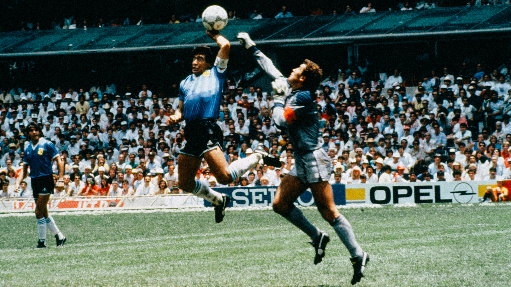
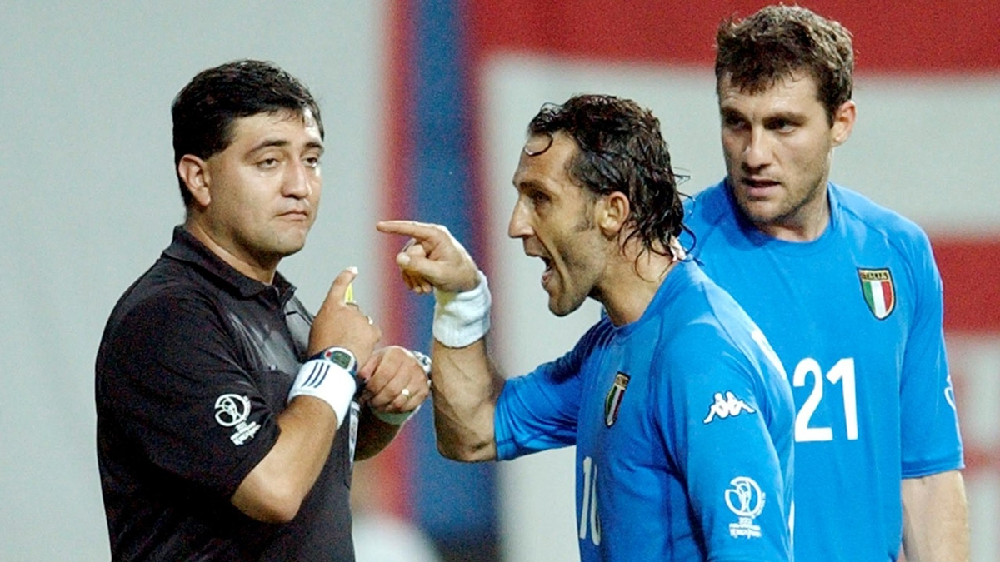
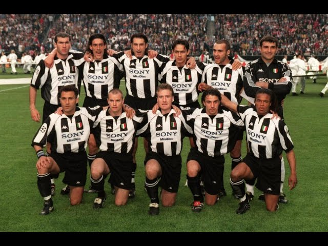
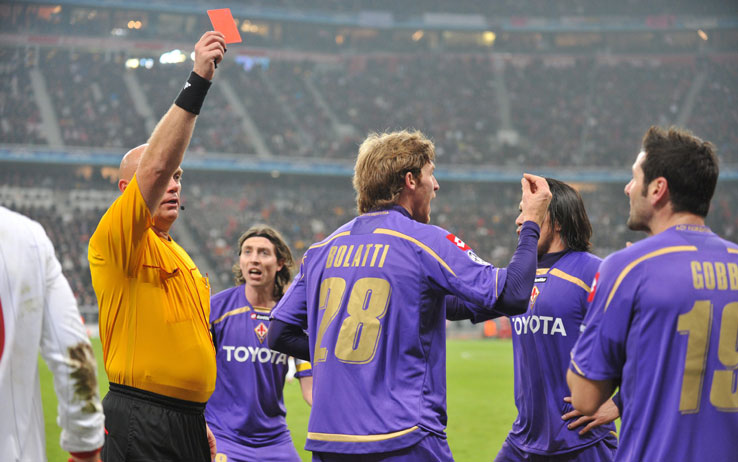

Nella storia del calcio sono stati tanti gli errori arbitrali che hanno fatto discutere sia i tifosi che gli addetti ai lavori. Si tratta di sviste per le quali per anni in tanti hanno chiesto l’introduzione della moviola in campo che, alla fine, è stata adottata di recente: il Var nel calcio oggi sta aiutando a evitare problemi che, in passato, hanno invece infiammato gli animi. Ecco qui 4 errori arbitrali clamorosi più uno dubbio bonus, forse, il nuovo regolamento VAR avrebbe potuto evitare.
-
Errori arbitrali clamorosi: la mano di Maradona
22 giugno 1986 - 2-1Risale al 1986 la prima svista della nostra classifica degli errori arbitrali passati alla storia: il 22 giugno di quell’anno a Città del Messico si giocò la finale dei Mondiali che vide in campo l’Argentina di Maradona contro l’Inghilterra. Fu proprio il celebre ex campione del Napoli a sbloccare il match, fermo sullo 0 a 0, facendo un gol grazie a una palla che gli arrivò dall’alto. Maradona, però, non la colpì di testa come sarebbe stato lecito fare, bensì con il pugno: l’arbitro tunisino Alì Bin Nasser, però, non si accorse della cosa e così convalidò il gol che passò alla storia come la rete della “mano de Dios”.
D10S -
Gli errori arbitrali dei Mondiali del 2002
18 giugno 2002 - 2-1Il secondo posto spetta di diritto ai Mondiali del 2002, considerati da molti come tra quelli con il peggior arbitraggio di sempre. In questo caso gli errori arbitrali furono più di uno: a far discutere, in particolare, furono i risultati ottenuti dalla Corea del Sud che ospitava l’evento, favoriti secondo molti proprio da qualche scorrettezza operata dagli arbitri. L’Italia fu tra le vittime di quella strana situazione e venne eliminata ai quarti di finale grazie all’arbitro Byron Moreno, il cui nome suscita ancora tensioni in tanti tifosi italiani. Non andò meglio alla Spagna, eliminata sempre ai quarti di finale dalla Corea: gli spagnoli si videro annullare due gol che probabilmente il regolamento Var oggi avrebbe convalidato.
Byron Monello -
La Juventus e gli errori arbitrali
20 maggio 1998 - 0-1La Juventus e gli errori arbitrali. Sono tanti i tifosi che in Italia da sempre accusano la Juve di essere favorita dagli arbitri. Sebbene tanti episodi siano discutibili, in realtà ha subito danni anche la stessa Juventus dagli errori arbitrali. Al terzo posto, infatti, troviamo l’episodio che risale alla finale di Champions del 1998, durante la quale i bianconeri affrontarono il Real Madrid: la squadra di Torino si vide strappare il trofeo per colpa di una svista del direttore di gara che convalidò un gol degli avversari, sebbene fosse in evidente fuorigioco.
La storia infinita -
Gli errori arbitrali ai danni della Fiorentina in Champions
17 febbraio 2010 - 2-1Al quarto posto è doveroso ricordare gli errori arbitrali che distrussero il sogno Champions dei viola ai quarti di finale del 2010. La Fiorentina affrontò il Bayern Monaco e il direttore di gara norvegese Tom Henning Øvrebø prese delle decisioni che furono molto contestate: espulse Gobbi ma non Klose, nonostante il brutto fallo commesso ai danni di Vargas e poi, allo stesso giocatore del Bayern, convalidò un gol irregolare che consegnò la vittoria alla squadra tedesca.
Lo scippo di Monaco
-BONUS-Gli errori arbitrali in Serie A: il gol di Muntari
Spesso i tifosi si chiedono come sarebbe la classifica di Serie A senza gli errori arbitrali: oggi, fortunatamente, grazie al Var, i risultati delle partite sono meno falsati rispetto al passato, ma nel 2012 un episodio fece molto discutere nel nostro Campionato. La svista dell’arbitro Tagliavento che, nella partita tra Juve e Milan a San Siro, non vide il pallone mandato in rete dal rossonero Sulley Muntari e respinto dal portiere avversario Gigi Buffon solo dopo essere entrato di almeno mezzo metro dentro la porta. Nonostante le proteste di Massimiliano Allegri, considerato oggi uno dei migliori allenatori del momento, il gol non fu convalidato. Secondo i detrattori della Juventus, errori arbitrali come questo e come quello citato in precedenza avrebbero favorito l’ascesa del club bianconero, in particolare negli ultimi anni.